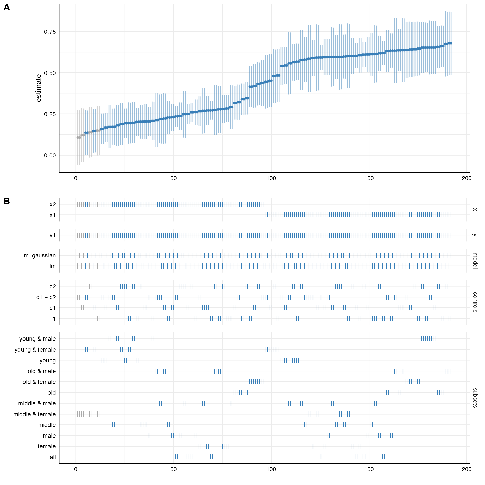

How to use SPECR
specr.rmdThe following example is a more comprehensive version of the example on the homepage and exemplifies how to use the major functions of this package.
Step 1: Check the data
In order to understand what type of analytical choices exists, you need to understand your data set. In a first step, you should hence investigate your data closely.
# Load library
library(specr)
# We have a look at the simulated data set that is included in the package
head(example_data)
#> x1 x2 c1 c2 y1 y2 group1
#> 1 1.533913 1.3697122 0.5424902 3.8924435 23.500543 10.4269278 0
#> 2 1.680639 1.5163745 -1.2415868 3.3377268 17.017955 0.5733467 1
#> 3 1.223941 -0.2381044 0.1405891 0.8911959 -3.678272 4.2303190 0
#> 4 1.765276 0.9524049 4.0397943 1.8567454 21.668684 14.8865252 1
#> 5 1.907134 0.6282816 3.1002518 5.5840574 32.713106 20.5251920 0
#> 6 1.710695 1.1898467 0.4648824 4.0239483 20.422171 4.3471236 1
#> group2
#> 1 A
#> 2 C
#> 3 B
#> 4 B
#> 5 A
#> 6 C
# Summary of the data set
summary(example_data)
#> x1 x2 c1 c2
#> Min. :-1.185 Min. :-1.6037 Min. :-4.093 Min. :-3.780
#> 1st Qu.: 1.823 1st Qu.: 0.5248 1st Qu.: 1.242 1st Qu.: 1.282
#> Median : 2.479 Median : 1.2740 Median : 2.513 Median : 2.775
#> Mean : 2.455 Mean : 1.2999 Mean : 2.499 Mean : 2.690
#> 3rd Qu.: 3.192 3rd Qu.: 2.1049 3rd Qu.: 3.897 3rd Qu.: 4.064
#> Max. : 5.576 Max. : 4.5741 Max. : 7.994 Max. : 9.001
#> y1 y2 group1 group2
#> Min. :-22.93 Min. :-22.148 Min. :0.0 A:144
#> 1st Qu.: 12.50 1st Qu.: 3.944 1st Qu.:0.0 B:162
#> Median : 21.69 Median : 11.753 Median :0.5 C:194
#> Mean : 23.89 Mean : 11.200 Mean :0.5
#> 3rd Qu.: 34.04 3rd Qu.: 17.966 3rd Qu.:1.0
#> Max. : 94.13 Max. : 46.341 Max. :1.0There are several numeric variables. For this use case, we assume that x represents independent variables, y represents dependent variables, c represents control variables, and group denotes potential grouping variables that can be used for subsetting the data.
Step 2: Define analytical choices
The next steps involves identifying possible analytical choices. This step involves an in-depth understanding of the research question and the model(s) that will be specified. In this case, we assume simply that x should be positively correlated with y. We can use the additional function setup_specs() to check how different analytical decisions create varying factorial designs.
setup_specs(y = c("y1"), # We choose only one dependent variale
x = c("x1", "x2"), # We are not sure which independent variable is better
model = c("lm"), # We only estimate one type of model (linear model)
controls = c("c1", "c2")) # We include two control variable
#> # A tibble: 8 x 4
#> x y model controls
#> <chr> <chr> <chr> <chr>
#> 1 x1 y1 lm c1 + c2
#> 2 x2 y1 lm c1 + c2
#> 3 x1 y1 lm c1
#> 4 x2 y1 lm c1
#> 5 x1 y1 lm c2
#> 6 x2 y1 lm c2
#> 7 x1 y1 lm no covariates
#> 8 x2 y1 lm no covariatesThe resulting data frame creates six different specifications. setup_specs() can be used to check and understand how different analytical choices create specific combinations. Yet, this step is not mandatory. It is used within the next function that actually runs the specification analysis.
Step 3: Define final analytical choices and run the analysis
The main function of the package is run_specs(). Similar to setup_specs we need to include our analytical choices as arguments. Additionally however, we also need to provide the data and we can also specify subsets that should be evaluated.
One type of analytical choice that could additionally affect the results refers to the type of model that is estimated. The function runs traditional linear regression models by default (i.e. when model = "lm"is provided as argument). However, customized model functions can be passed to the function. The only requirement is that the customized functions requires a (regression) formula and the data.
# Self-made function
lm_gauss <- function(formula, data) {
glm(formula = formula, data = data, family = gaussian(link = "identity"))
}
# Run specification curve analysis
results <- run_specs(df = example_data,
y = c("y1", "y2"),
x = c("x1", "x2"),
model = c("lm", "lm_gauss"),
controls = c("c1", "c2"),
subsets = list(group1 = unique(example_data$group1),
group2 = unique(example_data$group2)))
# Check results
results
#> # A tibble: 384 x 12
#> x y model controls estimate std.error statistic p.value
#> <chr> <chr> <chr> <chr> <dbl> <dbl> <dbl> <dbl>
#> 1 x1 y1 lm c1 + c2 4.95 0.525 9.43 3.11e-18
#> 2 x2 y1 lm c1 + c2 6.83 0.321 21.3 1.20e-57
#> 3 x1 y2 lm c1 + c2 -0.227 0.373 -0.607 5.44e- 1
#> 4 x2 y2 lm c1 + c2 0.985 0.324 3.04 2.62e- 3
#> 5 x1 y1 lm_g… c1 + c2 4.95 0.525 9.43 3.11e-18
#> 6 x2 y1 lm_g… c1 + c2 6.83 0.321 21.3 1.20e-57
#> 7 x1 y2 lm_g… c1 + c2 -0.227 0.373 -0.607 5.44e- 1
#> 8 x2 y2 lm_g… c1 + c2 0.985 0.324 3.04 2.62e- 3
#> 9 x1 y1 lm c1 5.53 0.794 6.97 2.95e-11
#> 10 x2 y1 lm c1 8.07 0.557 14.5 6.90e-35
#> # … with 374 more rows, and 4 more variables: conf.low <dbl>,
#> # conf.high <dbl>, obs <int>, subsets <chr>The result data frame includes relevant statistics for each of the estiamted models.
Step 4: Investigate the specification curve
The package includes a simple function summarise_specs() that allows to get a first summary of the results.
# basic summary of the entire specification curve
summarise_specs(results)
#> # A tibble: 1 x 7
#> median mad min max q25 q75 obs
#> <dbl> <dbl> <dbl> <dbl> <dbl> <dbl> <dbl>
#> 1 3.59 4.56 -2.05 9.58 1.03 7.63 123
# summary by specific groups and statistics
summarise_specs(results,
stats = lst(median, min, max),
group = c("x", "y"))
#> # A tibble: 4 x 6
#> # Groups: x [2]
#> x y median min max obs
#> <chr> <chr> <dbl> <dbl> <dbl> <dbl>
#> 1 x1 y1 6.52 3.49 9.28 123
#> 2 x1 y2 0.498 -2.05 3.67 123
#> 3 x2 y1 7.80 5.89 9.58 123
#> 4 x2 y2 1.29 -0.258 2.91 123
# summary of another statistic
summarise_specs(results,
var = "p.value",
group = "subsets")
#> # A tibble: 12 x 8
#> subsets median mad min max q25 q75 obs
#> <chr> <dbl> <dbl> <dbl> <dbl> <dbl> <dbl> <dbl>
#> 1 all 1.84e-6 2.72e-6 5.08e-89 0.838 6.48e-40 6.31e-2 500
#> 2 group1 = 0 2.86e-5 4.24e-5 1.20e-57 0.994 2.33e-18 2.59e-1 250
#> 3 group1 = 0 &… 1.07e-3 1.59e-3 6.98e-16 0.577 2.35e- 5 4.95e-3 72
#> 4 group1 = 0 &… 7.86e-4 1.17e-3 2.53e-21 0.930 2.43e- 9 1.23e-1 76
#> 5 group1 = 0 &… 1.03e-3 1.53e-3 2.05e-22 0.572 2.37e- 8 6.66e-2 102
#> 6 group1 = 1 2.51e-5 3.71e-5 6.96e-46 0.749 3.52e-19 7.36e-2 250
#> 7 group1 = 1 &… 7.83e-5 1.16e-4 9.73e-17 0.0395 7.35e- 7 1.58e-3 72
#> 8 group1 = 1 &… 9.59e-5 1.42e-4 1.51e-15 0.277 1.32e- 9 7.74e-2 86
#> 9 group1 = 1 &… 7.58e-6 1.12e-5 3.86e-18 0.862 1.75e- 8 1.78e-1 92
#> 10 group2 = A 3.28e-8 4.86e-8 5.64e-30 0.0245 9.45e-11 9.52e-6 144
#> 11 group2 = B 2.87e-5 4.25e-5 2.05e-28 0.231 1.13e-15 8.32e-3 162
#> 12 group2 = C 3.03e-7 4.49e-7 2.45e-35 0.487 1.07e-15 3.48e-2 194The output contains summary statistics such as the median, the median absolute deviation, … as well as the number of observations that were used for each model. Bear in mind that due to subsetting or missing data, sample sizes can vary considerably which, in turn, affects the results (e.g., the p-value).
However, in order to grasp how the different analytical choices affect the outcome of interest (in this case, the estimate refers to the unstandarized regression coefficient b), it is reasonable to plot a specification curve. The function plot_specs() to produces the typical visualization of the specification curve and how the analytical choices affected the obtained results.
# Plot specification curve analysis
plot_specs(results)
Step 5: Decompose the variance in the specification curve
Finally, we can estimate how much variance in the specification curve is related to which analytical decisions. Therefore, we have to estimate a basic multilevel model without predictors and the analytical decisions as random effects (interactions could be included too). We then use the function icc_specs() to calculate a respective table or plot_variance() to visualize the distribution.
# Estimate multilevel model
library(lme4)
model <- lmer(estimate ~ 1 + (1|x) + (1|y) + (1|controls) + (1|subsets), data = results)
# Get intra-class correlation
icc_specs(model) %>%
mutate_if(is.numeric, round, 2)
#> grp vcov icc percent
#> 1 subsets 0.79 0.04 3.62
#> 2 controls 0.05 0.00 0.23
#> 3 y 19.74 0.90 89.83
#> 4 x 0.43 0.02 1.95
#> 5 Residual 0.96 0.04 4.38
# Plot decomposition
plot_variance(model)